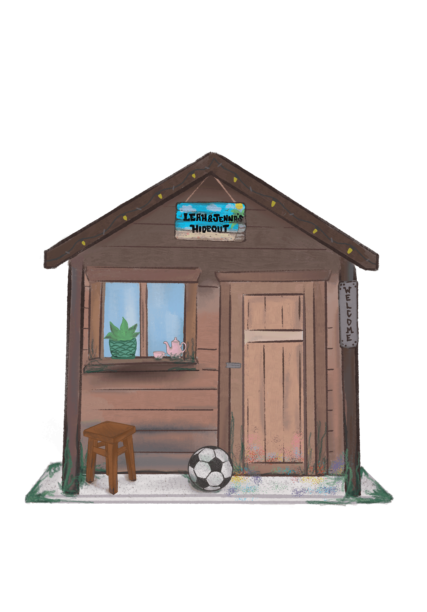

A Glance at the Past

A Glance at the Past is a digital illustration made in Procreate. It is a playful representation of the outdoor house that my sister and I grew up with over the years. This piece represents childhood and whimsy which can be seen in the nostalgic elements added into the illustration.